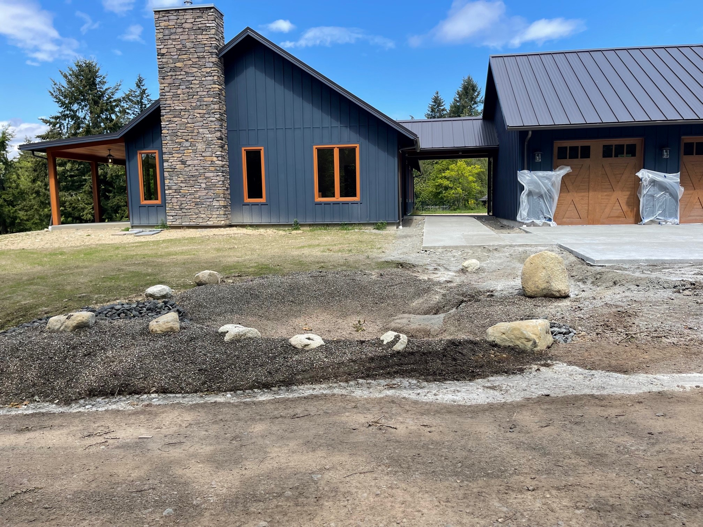
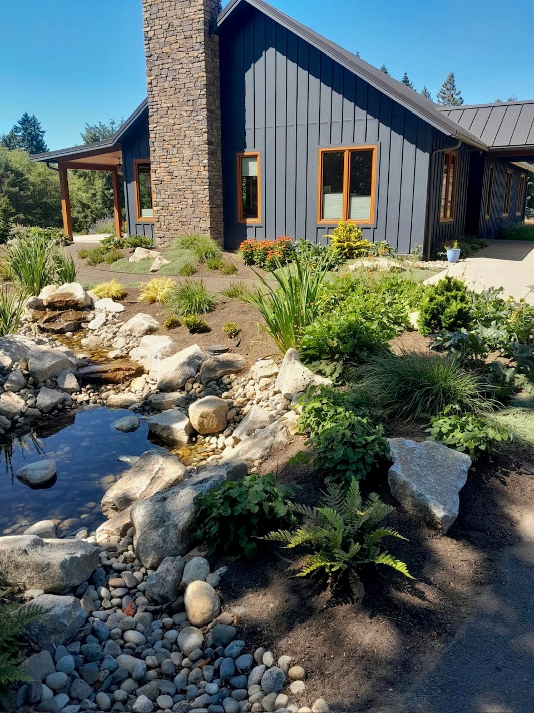
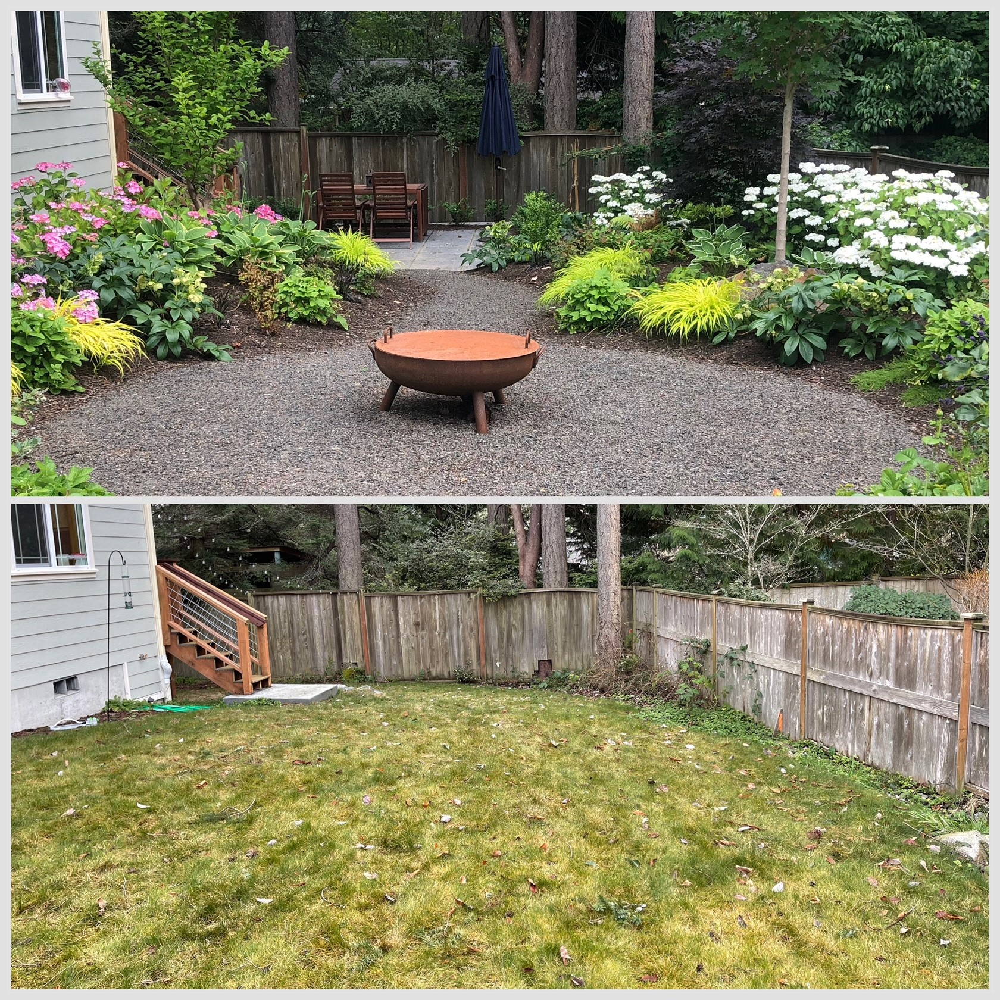
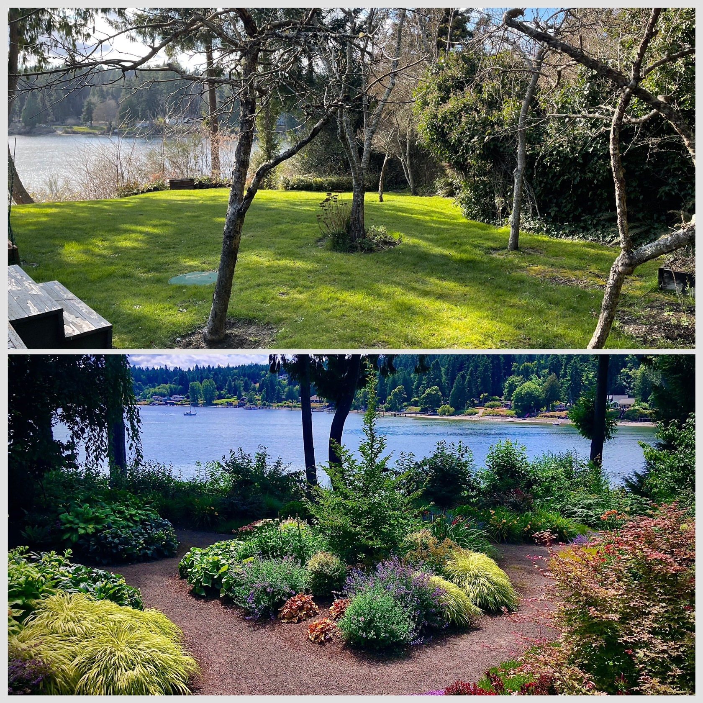
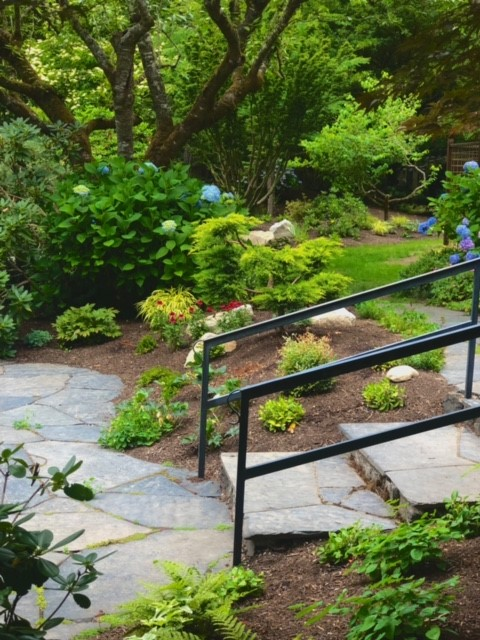
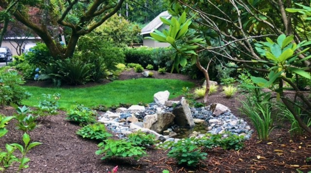
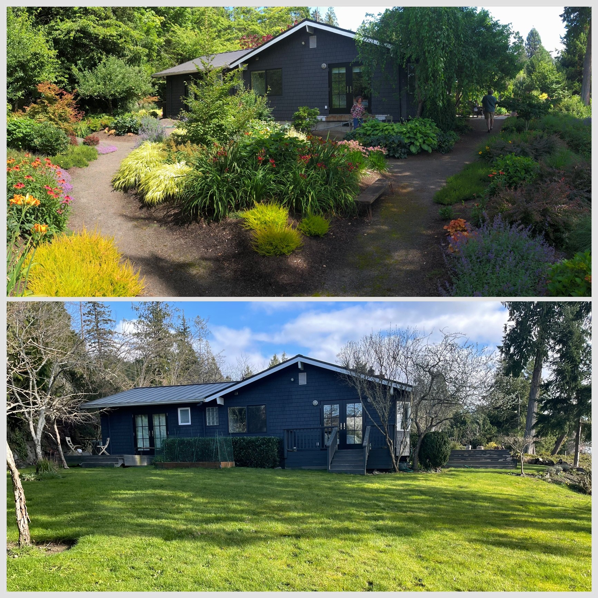

Landscape design
Site-aware plans that connect architecture, movement, and planting.

Design · Build · Care
JLE turns open ground into grounded, generous outdoor spaces—designed for your home, your rhythm, and the Northwest.
ExploreWe bring design instinct and practical expertise to every layer of your landscape—planting, stone, water, pathways, and the quiet details that make a space feel complete.
Site-aware plans that connect architecture, movement, and planting.
Careful grading, soil preparation, planting, and finishing.
Naturalistic ponds, streams, boulders, steps, and pathways.
Seasonal attention that helps established landscapes thrive.

Residential · Water featureFeatured transformation
Layered planting softens the architecture while a hand-set stone stream creates a natural focal point. The result feels established—not installed.

Every transformation begins with what’s already there: light, grade, mature trees, architecture, and how you want to use the space.

Color, texture, and a view revealed.

Stone underfoot, four-season structure.

A tucked-away moment of movement and sound.

Paths that invite wandering.
Your project
Tell us what you’re imagining. We’ll help shape the next step.